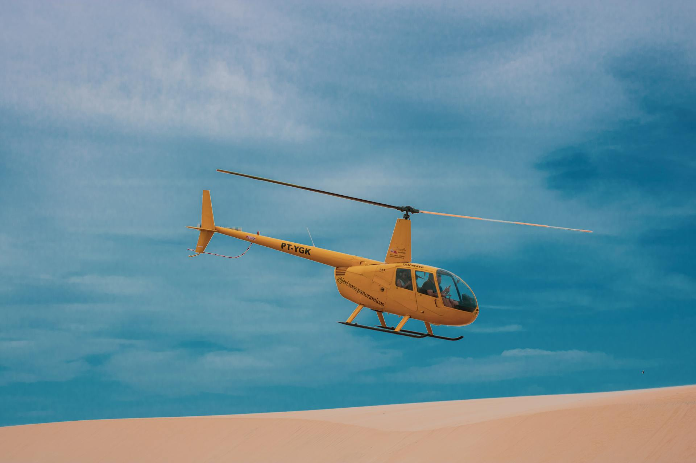

- Érdekesség: Gyorsabbak, mint hinnéd: Míg sokan úgy gondolják, hogy a helikopterek lassabbak, mint a repülőgépek, valójában néhányuk rendkívül nagy sebességre képes. A Bell 407 például az egyhajtóműves közepes méretű helikopterek között a leggyorsabbak egyike, amely akár a 260 km/h-t is meghaladhatja.
- Sokoldalúság: A civil helikopterek rendkívül sokoldalúak és változatos feladatokat láthatnak el. Nemcsak szállításra és üzleti utazásokra használhatóak, hanem gyakran alkalmazzák légi fotózásra, filmforgatásra, hírszerzésre, valamint gáz- és olajfúrási munkálatokra is.
- Függőleges lebegés képesség: A helikopterek egyik legkiemelkedőbb tulajdonsága a függőleges lebegés képessége. Ez azt jelenti, hogy a helikopter képes a helyén lebegni és a levegőben maradni, ami rendkívül hasznos lehet keresési, mentési és precíziós manőverek során.
| 🧷 Robinson R44 Raven 2 technikai adatai | |
|---|---|
| Maximális sebesség: | 240 km/h |
| Maximális hatótávolság: | 560 km |
| Teljesítmény | 245 lóerő |
| Férőhely: | 4 fő |